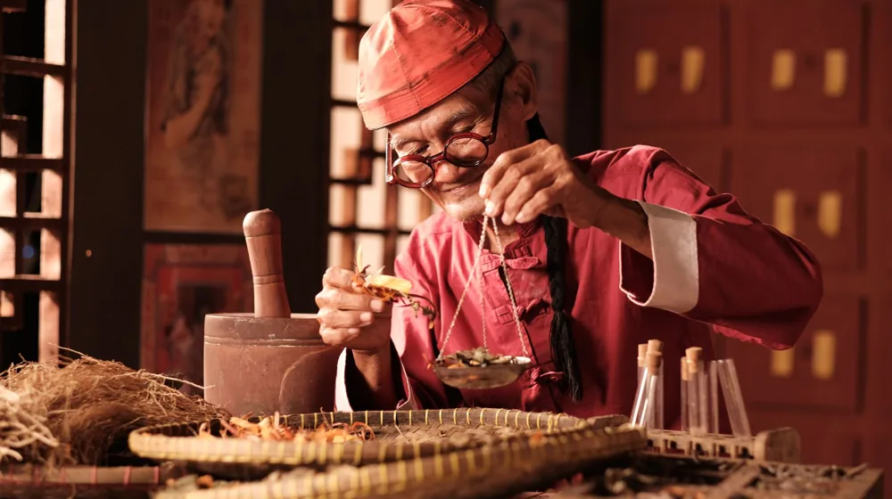

처음 한방 힐링, 뭘 골라야 할까? 초보자를 위한 핵심 가이드
사진: Andreas Suwardy / Pexels (무료 이미지, 출처 표기)
한방 힐링 프로그램, 어디서부터 시작해야 할지 막막하신가요?

일상의 피로와 스트레스를 내려놓고 진정한 휴식을 찾고 싶지만, 수많은 한방 힐링 프로그램 중에서 어떤 것을 골라야 할지 고민될 수 있습니다. 이 글은 한방 힐링을 처음 접하는 분들을 위해 나에게 맞는 프로그램 선택법부터 주요 유형, 이용처, 그리고 신청 전 반드시 확인해야 할 체크리스트까지 쉽고 정확하게 안내해 드립니다. 지금부터 건강한 변화를 위한 첫걸음을 함께 시작해볼까요?
나에게 맞는 한방 힐링 프로그램 유형 선택하기
한방 힐링 프로그램은 신체적, 정신적 건강 증진을 목표로 다양한 형태를 가지고 있습니다. 크게는 몸의 기운을 보하고 순환을 돕는 ‘신체 개선형’과 마음의 안정과 스트레스 해소를 돕는 ‘심신 안정형’으로 나눌 수 있습니다.
- 신체 개선형: 만성 통증, 소화 불량, 비염 등 특정 신체 불편함 완화에 중점을 둡니다. 침, 뜸, 부항, 약선 요법, 한방 목욕 등이 포함될 수 있습니다.
- 심신 안정형: 스트레스, 불면증, 불안감 등 정신적 피로 해소에 초점을 맞춥니다. 한방 명상, 요가, 호흡법, 아로마 테라피, 숲 치유 등이 대표적입니다.
자신이 어떤 부분에서 더 도움을 받고 싶은지 명확히 하는 것이 첫 번째 선택 기준이 됩니다. 예를 들어, 어깨 통증이 심하다면 침이나 뜸 프로그램이, 밤에 잠들기 어렵다면 명상이나 아로마 요법이 더 적합할 수 있습니다.
주요 한방 힐링 프로그램 4가지 비교
다양한 한방 힐링 프로그램 중 초보자들이 많이 찾는 대표적인 유형들을 비교하여 자신에게 맞는 프로그램을 선택하는 데 도움을 드리고자 합니다. 아래 표는 2026년 11월 기준으로 일반적인 정보이며, 각 기관마다 프로그램 구성과 비용은 상이할 수 있습니다.
한방 힐링 프로그램, 어디서 이용할 수 있나요?
한방 힐링 프로그램을 이용할 수 있는 곳은 크게 전문 의료기관, 힐링 수련원, 그리고 지자체 운영 시설로 나눌 수 있습니다.
- 전문 한의원/한방병원: 개인의 증상에 맞춰 침, 뜸, 한약 처방 등 의료 서비스와 연계된 프로그램을 제공합니다. 의료진과의 상담을 통해 정밀한 진단과 치료를 병행할 수 있다는 장점이 있습니다.
- 한방 힐링 리조트/수련원: 도심을 벗어나 자연 속에서 체계적인 장기 프로그램을 경험할 수 있습니다. 숙박과 함께 다양한 한방 요법, 명상, 요가, 약선 음식 등이 결합된 패키지로 운영되는 경우가 많습니다.
- 지자체/정부 운영 센터: 일부 지역에서는 정부나 지방자치단체에서 운영하는 한방 힐링 센터나 웰니스 프로그램을 저렴한 비용으로 제공합니다. 2026년 11월 기준으로 지역 보건소나 문화센터에서 관련 강좌를 개설하기도 하므로, 거주 지역의 공식 홈페이지를 확인해 보시는 것이 좋습니다.
예산과 원하는 프로그램의 기간, 접근성 등을 고려하여 자신에게 맞는 이용처를 선택하세요. 특히 지자체 프로그램은 조기 마감될 수 있으니 미리 확인하고 신청하는 것이 중요합니다.
현명한 선택을 위한 한방 힐링 프로그램 체크리스트
성공적인 한방 힐링 경험을 위해 프로그램을 선택하기 전 다음 사항들을 꼼꼼히 확인하세요.
- 개인의 체질 및 건강 상태 고려: 모든 사람에게 동일한 프로그램이 효과적인 것은 아닙니다. 자신의 체질(사상체질 등)과 현재 건강 상태에 대한 충분한 상담 후 적합한 프로그램을 선택해야 합니다.
- 전문성 확인: 프로그램 진행자의 자격(한의사, 전문 강사 등)과 경험을 확인합니다. 특히 의료 행위가 포함된 경우 반드시 면허를 가진 전문가에게 받는 것이 중요합니다.
- 시설 및 환경: 힐링을 위한 공간인 만큼, 청결하고 안전하며 편안한 환경인지 직접 방문하거나 사진을 통해 확인하는 것이 좋습니다.
- 비용 및 포함 내역: 프로그램 비용에 어떤 서비스가 포함되는지(식사, 숙박, 개별 상담 등) 명확히 확인하고, 추가 비용이 발생할 수 있는 부분은 없는지 미리 문의합니다.
- 후기 및 평판: 해당 프로그램을 이용했던 사람들의 후기나 온라인 커뮤니티의 평판을 참고하는 것도 좋은 방법입니다.
한방 힐링 프로그램, 이것만은 꼭 알아두세요!
한방 힐링을 시작하기 전 궁금할 만한 몇 가지 질문에 대한 답변입니다.
- 부작용은 없을까요?
대부분의 한방 힐링 프로그램은 안전하지만, 개인의 체질이나 민감도에 따라 약재 알레르기, 특정 시술 후 가벼운 통증 등이 나타날 수 있습니다. 프로그램 시작 전 반드시 자신의 병력과 알레르기 유무를 알리고 전문가와 상담해야 합니다.
- 특별한 준비물이 필요한가요?
명상이나 요가 프로그램의 경우 편안한 복장, 개인 수건 등이 필요할 수 있습니다. 스파나 목욕 프로그램은 개인 위생용품을 준비해야 할 수도 있습니다. 각 프로그램 안내 시 제공되는 준비물 정보를 확인하는 것이 가장 정확합니다.
- 의료보험 적용이 되나요?
일반적으로 한의원에서 진행되는 침, 뜸, 부항 등 의료 행위는 국민건강보험 적용을 받을 수 있습니다. 하지만 순수 힐링 목적의 명상, 약선 요리 체험, 스파 등은 비급여 항목으로 건강보험 적용이 어렵습니다. 자세한 내용은 각 프로그램 운영 기관에 직접 문의하는 것이 좋습니다.
한방 힐링은 바쁜 일상 속에서 자신을 돌아보고 건강을 돌보는 소중한 시간이 될 수 있습니다. 위에 제시된 가이드를 바탕으로 자신에게 꼭 맞는 프로그램을 찾아 건강하고 활기찬 삶을 누리시길 바랍니다. 정확한 프로그램 내용 및 최신 정보는 각 기관의 공식 홈페이지나 직접 문의하여 확인하시길 권장합니다.
🔗 이 글도 함께 보면 좋아요: 한방 족욕, 처음인데 뭐부터? 초보자를 위한 핵심 가이드
관련 추천 상품
한방차, 힐링 아로마, 족욕 세트 관련 인기 상품 보러가기
이 포스팅은 쿠팡 파트너스 활동의 일환으로, 이에 따른 일정액의 수수료를 제공받습니다.